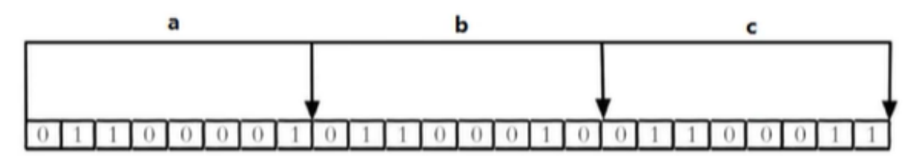

redis学习笔记
1.redis基础介绍
Redis是一款基于键值对的NoSQL（Not only sql：非关系型数据库）数据库，它的值支持多种数据结构；字符串(String)、哈希(hashes)、列表(lists)、集合（zset）、有序集合(sorted sets)。Redis 能将所有经常访问的数据存放在内存中，提高系统读写能力；同时，Redis 还有持久化机制保证数据的安全性。可以将内存中的数据以快照（将内存中的数据原封原样的存放到硬盘上，但是效率较低，可能会有阻塞，不适合实时的做）或日志（存的是Redis的操作命令，可以实时存储，但是恢复时很慢）的形式保存在硬盘上，以保证数据的安全性，不会因为关闭系统而丢失数据；
2.redis数据结构
Key：String
Value：String、Hash、List、Set、ZSet、BitMap、HyperLogLog
2.1 redis String
String的数据结构为简单动态字符串（Simple Dynamic String，缩写SDS）。是可以修改的字符串，内部结构上类似于Java的ArrayList，采用分配冗余空间的方式来减少内存的频繁分配。
如图所示，内部为当前字符串实际分配的空间capacity一般要高于实际字符串长度len。当字符串长度小于1M时，扩容都是加倍现有的空间，如果超过1M，扩容时一次会多扩容1M的空间。要注意的是字符串最大长度为512M。
2.2redis 列表
单键多值，redis列表是简单的字符串列表，按照插入顺序排序。可以添加一个元素到列表的头部（左边）或者尾部（右边）。
它的底层实际上是使用双向链表实现的，对两端的操作性能很高，通过索引下标操作中间节点性能会较差。
2.3 redis集合
redis set对外提供的功与list类似，是一个列表的功能，特殊之处在于set是可以自动排重的，当你需要存储一个列表数据，又不希望出现重复数据时，set是一个很好的选择。
redis的set是string类型的无序集合，他的底层实际是一个value为null的hash表，添加，删除，查找复杂度都是O(1)（哈希表的时间复杂度是O（1））。
一个算法，如果时间复杂度是O(1)，那么随着数据的增加，查找数据的时间不变，也就是不管数据多少，查找时间都是一样的。
2.4redis哈希（hash）
Redis hash是一个键值对集合。
Redis hash是一个string类型的field和value的映射表，hash特别适合用于存储对象。
类似于java里面的Map<String,Object>
2.5 redis有序集合zset（sorted set）
redis有序集合zset与普通集合set非常相似，是一个没有重复元素的字符串集合。
不同之处是有序集合的每个成员都关联了一个评分（score），这个评分（score）被用来按照从最低分到最高分的方式排序集合中的成员。
集合的成员是唯一的，但是评分是可以重复的。
因为元素是有序的，所以你可以很快的根据评分（score）或者次序（position）来获取一个范围的元素。
访问有序集合中的中间元素也是非常快的，因为你能够使用有序集合作为一个没有重复成员你的智能列表。
底层实现不是红黑树，是跳跃表。
作者本人的回答：
1 | They are not very memory intensive. It’s up to you basically. Changing parameters about the probability of a node to have a given number of levels will make then less memory intensive than btrees. |
redis选择跳跃表而非红黑树作为有序集合实现方式的原因并非是基于并发上的考虑，因为redis是单线程的，选用跳跃表的原因仅仅是因为跳跃表的实现相较于红黑树更加简洁。
2.7 Bitmaps位操作字符串
现代计算机使用二进制（位）作为信息的基本单位，1个字节等于8位，例如“abc”字符串是有3个字节组成，但实际在计算机内存储时将其使用二进制表示，“abc”分别对应的ASCII码是：97、98、99，对应的二进制分别是01100001、01100010、01100011，如下图

合理地使用位操作能够有效地提高内存使用率和开发效率。
Redis提供了Bitmaps这个“数据类型”可以实现对位的操作：
Bitmaps本身不是一种数据类型， 实际上它就是字符串（key-value） ， 但是它可以对字符串的位进行操作，字符串中每个字符对应1个字节，也就是8位，一个字符可以存储8个bit位信息。
Bitmaps单独提供了一套命令， 所以在Redis中使用Bitmaps和使用字符串的方法不太相同。 可以把Bitmaps想象成一个以位为单位的数组， 数组的每个单元只能存储0和1， 数组的下标在Bitmaps中叫做偏移量。
2.8 HyperLoglog
在工作当中，我们经常会遇到与统计相关的功能需求，比如统计网站 PV（PageView 页面访问量），可以使用 Redis 的 incr（+1）、incrby （+指定值）轻松实现。但像 UV（UniqueVisitor 独立访客）、独立 IP 数、搜索记录数等需要去重和计数的问题如何解决？这种求集合中不重复元素个数的问题称为基数问题。
解决基数问题有很多种方案：
数据存储在 MySQL 表中，使用 distinct count 计算不重复个数。
使用 Redis 提供的 hash、set、bitmaps 等数据结构来处理。
以上的方案结果精确，但随着数据不断增加，导致占用空间越来越大，对于非常大的数据集是不切实际的。能否能够降低一定的精度来平衡存储空间？Redis 推出了 HyperLogLog。
Redis HyperLogLog 是用来做基数统计的算法，HyperLogLog 的优点是：在输入元素的数量或者体积非常非常大时，计算基数所需的空间总是固定的、并且是很小的。
在 Redis 里面，每个 HyperLogLog 键只需要花费 12 KB 内存，就可以计算接近 2^64 个不同元素的基数。这和计算基数时，元素越多耗费内存就越多的集合形成鲜明对比。
但是，因为 HyperLogLog 只会根据输入元素来计算基数，而不会储存输入元素本身，所以HyperLogLog 不能像集合那样，返回输入的各个元素。
什么是基数？
比如数据集 {1, 3, 5, 7, 5, 7, 8}，那么这个数据集的基数集为 {1, 3, 5 ,7, 8}，基数 (不重复元素) 为 5。 基数估计就是在误差可接受的范围内，快速计算基数。
2.9 Geographic
Reids3.2 中增加了对GEO类型的支持，GEO（Geographic），地理信息的缩写。
该类型，就是元素的 2 维坐标，在地图上就是经纬度，redis基于该类型，提供了经纬度设置、查询、范围查询、距离查询，经纬度Hash等常见操作。
3.redis持久化
Redis是一个基于内存的数据库，它的数据是存放在内存中，内存有个问题就是关闭服务或者断电会丢失。
Redis的数据也支持写到硬盘中，这个过程就叫做持久化。
Redis提供了2种不同形式的持久化方式。
RDB（Redis DataBase）
AOP（Append Of File）
3.1redis持久化之RDB（Redis DataBase）
RDB：在指定的时间间隔内将内存中的数据集快照写入磁盘，也就是行话讲的Snapshot快照，它恢复时是键快照文件直接读到内存里。
3.1.1备份是如何执行的
Redis会单独创建（fork）一个子进程进行持久化，会先将数据写入到一个临时文件中，待持久化过程都结束后，再用这个临时文件替换上次持久化好的文件。整个过程中，主进程是不进行任何IO操作的，这就是确保了极高的性能，如果需要进行大规模的恢复，且对数据恢复的完整性不是非常敏感，那RDB方式要比AOF方式更加的高效。RDB的缺点是最后一次持久化后的数据可能丢失。
3.1.2 Fork
Fork的作用是复制一个与当前进程一样的进程，新进程的所有数据（变量、环境变量、程序计数器等）数值都和原进程一致，它是一个全新的进程，并作为原进程的子进程。在Linux程序中，fork()会产生一个和父进程完全相同的子进程，但子进程在此后多会exec系统调用，处于效率考虑，linux中引入了“写时复制技术”一般情况父进程和子进程会共用一段物理内存，只有进程空间的各段的内容要发生变化时，才会将父进程的内容复制一份给子进程。